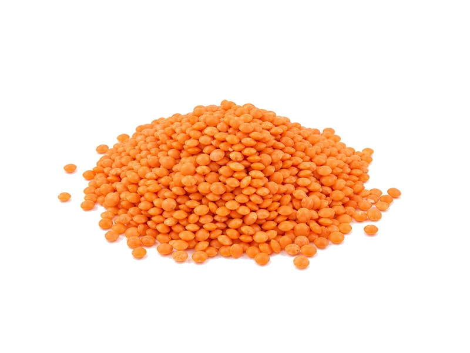

Warzywa
Soczewica czerwona (gotowana)
Soczewica czerwona (gotowana): 9 g białka, 116 kcal, 20 g węglowodanów i 0.4 g tłuszczu na 100 g. Kategoria: Warzywa.
Kalorie116 kcalna 100 g
Białko / proteiny9 g
Węglowodany20 g
Tłuszcz0.4 g
Cena (szac.)~1,23 złza 100 g
Ceny zaktualizowano: maj 2026 (szacunek — ceny w popularnych supermarketach)
Porcja: porcja (150g)
| Kalorie | 174 kcal |
|---|---|
| Białko | 13.5 g |
| Węglowodany | 30 g |
| Tłuszcz | 0.6 g |
| Cena (szac.) | ~1,85 zł |
Szczegółowe składniki odżywcze na 100 g
| Wartość energetyczna (kalorie) | 116 kcal |
|---|---|
| Białko (proteiny) | 9 g |
| Węglowodany | 20 g |
| Tłuszcz | 0.4 g |
| Tłuszcze nasycone | 0.1 g |
| Tłuszcze nienasycone | 0.3 g |
| Witaminy i minerały | Żelazo, Kwas foliowy, Witamina C |
| Współczynnik kcal / 1 g białka | 12.9 |
| Cena produktu (szac. za 100 g) | ~1,23 zł |
| Cena za 100 g białka (szac.) | ~13,70 zł |